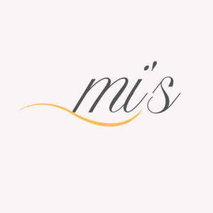

Trade Mark Journal No.2025/049 5 December 2025
UK00004302176 27 November 2025 (3,14)

- Class 3
- Beauty lotions; Makeup; Beauty care cosmetics; Beauty serums; Beauty creams; Natural makeup; Make-up; Beauty masks; Masks (Beauty -); Beauty balm creams; Facial makeup; Beauty gels; Beauty creams for body care; Facial beauty masks; Beauty preparations for the hair; Organic makeup; Beauty soap; Skincare cosmetics; Skin make-up; Lip makeup; Eye makeup; Make-up palettes containing cosmetics; Hair cosmetics; Nail makeup; Natural cosmetics; Make-up remover; Powder for make-up; Make-up powder; Eye makeup remover; Eye make-up; Make-up removers; Facial creams [cosmetics]; Cosmetics; Body and facial creams [cosmetics]; Beauty serums with anti-ageing properties; Make-up pencils; Make-up primer; Hair styling lotions; Body cleaning and beauty care preparations; Skin moisturizers used as cosmetics; Cosmetics for the use on the hair; Body care cosmetics; Hairstyling serums; Skin masks [cosmetics]; Colour cosmetics; Moisturisers [cosmetics]; Skin care cosmetics; Lip cosmetics; Facial gels [cosmetics]; Anti-aging moisturizers used as cosmetics; Make-up kits; Make-up for the face and body; After-sun oils [cosmetics]; Colour cosmetics for the eyes; Facial moisturisers [cosmetic].
- Class 14
- Fashion jewellery; Jewellery; Necklaces [jewellery]; Brooches [jewellery]; Costume jewellery; Jewellery brooches; Brooches [jewellery, jewelry (Am.)]; Jewelry; Necklaces [jewellery, jewelry (Am.)]; Trinkets [jewellery, jewelry (Am.)]; Jewellery products; Paste jewellery [costume jewelry (Am.)]; Paste jewellery [costume jewelry [Am.]]; Pins [jewellery, jewelry (Am.)]; Decorative brooches [jewellery]; Chains [jewellery, jewelry (Am.)]; Trinkets [jewellery]; Pearls [jewellery, jewelry (Am.)]; Bracelets [jewellery]; Wristlets [jewellery]; Ornaments [jewellery, jewelry (Am.)]; Brooches [jewelry]; Jewelry brooches; Items of jewellery; Jewellery items; Brooches being jewelry; Ornaments [jewellery]; Ivory [jewellery, jewelry (Am.)]; Dress ornaments in the nature of jewellery; Bracelets [jewellery, jewelry (Am.)]; Charms [jewellery, jewelry (Am.)]; Pendants [jewellery]; Pearls [jewellery]; Jewelry (Paste -) [costume jewelry]; Paste jewelry [costume jewelry]; Cloisonne jewellery; Hat jewellery; Pins being jewellery; Charms for jewellery; Jewellery charms; Rings [jewellery, jewelry (Am.)]; Jewellery chains; Body costume jewellery; Rings being jewellery; Rings [jewellery]; Body jewellery; Jewellery for personal wear; Jewellery articles; Articles of jewellery; Pewter jewellery; Agate as jewellery; Gold jewellery; Jewellery boxes; Jewellery stones; Gold thread [jewellery, jewelry (Am.)]; Jewellery chain of precious metal for necklaces; Bracelets [jewelry]; Gold plated brooches [jewellery]; Jewelry stickpins; Amber pendants being jewellery; Diamond jewelry; Crosses [jewellery].
Ariwaa Ltd